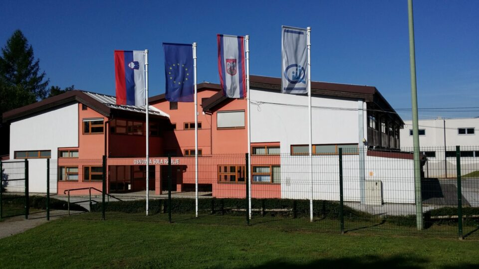

Opis OŠ Radlje ob Dravi

Osnovna šola Radlje ob Dravi je javna vzgojno-izobraževalna ustanova, ki učencem omogoča pridobivanje znanja in razvijanje različnih sposobnosti od 1. do 9. razreda. Šola ima poleg matične šole tudi podružnici na Remšniku in v Vuhredu ter vrtec. Ponaša se s sodobno opremljenimi učilnicami, telovadnico in športno dvorano. Učencem ponuja različne interesne dejavnosti, kulturne in športne prireditve ter številne priložnosti za ustvarjanje in sodelovanje. Posebno pozornost namenja kakovostnemu pouku, prijateljskim odnosom, ustvarjalnosti in varnemu šolskemu okolju. Njen cilj je, da učencem poleg znanja pomaga razvijati odgovornost, samostojnost, spoštovanje in dobre medsebojne odnose.